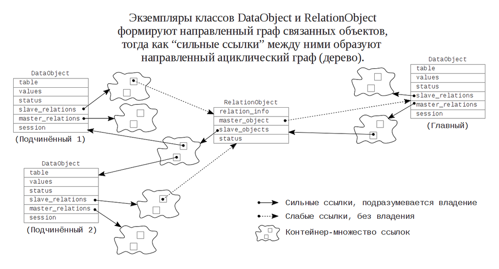

Изложу мою точку зрения на то, каким образом можно реализовать отображение отношения «1 к n». Сторона «1» - главная таблица, в то время как сторона «n» соответствует подчинённой (дочерней) таблице. Предположим, что нам хочется уметь манипулировать отношением с обеих сторон. С подчинённой стороны это отношение будет выглядеть как свойство-объект, и этот связанный объект, вероятно, можно устанавливать/менять/очищать. Со стороны главной таблицы то же отношение будет выглядеть как некое свойство-коллекция, которая позволяет по ней итерировать/добавлять/удалять ссылки на объекты. Так как любые изменения, сделанные с одной стороны, должны немедленно стать доступны с другой стороны этого отношения, то мы имеем следующие возможности достичь этого:
Проталкивать изменения всем участникам данного отношения немедленно. В этом случае свойство-коллекция, о котором уже говорилось, можно было бы реализовать на основе контейнеров общего назначения, переопределив методы для модификации контейнера.
Можно ввести промежуточный объект «экземпляр отношения», который будет владеть всей информацией о данном отношении для ровно одного экземпляра главной сущности. Тогда все запросы к свойствам с любой стороны отношения будут доставать данные из этого промежуточного объекта.
Чтобы выбрать между этими способами нужно ответить на несколько важных вопросов:
Как будут создаваться экземпляры отображаемых классов? Можно ли создать экземпляр отдельно без вставки его в реестр IdentityMap? Как насчёт создания связной структуры из новых объектов?
Можно ли копировать экземпляры отображённых классов, при этом сохраняя знание о других экземплярах, чтобы потом иметь возможность протолкнуть изменения? Или может быть нам следует иметь единственный экземпляр для каждой записи?
Кто отвечает за удаление объектов во всех возможных сценариях?
В любом случае есть механизмы, которые обычно используются в любом ORM-подобном решении. Например, паттерн IdentityMap подразумевает, что все экземпляры отображённых классов, изменения которых должны попасть в БД, следует регистрировать в специальном реестре. Это требуется для последующей операции «flush». Конечно, требуется поддерживать статус записей. По моему мнению, подход «экземпляр отношения» несколько легче реализовать. В частности, можете взглянуть на файлы DataObject.h, DataObject.cpp и тесты в файле TestDataObject.cpp (папка lib/orm/). Библиотека YB.ORM использует динамически типизированные объекты внутри и статически типизированные «тонкие» обёртки снаружи. Класс DataObject представляет экземпляр отображённого класса, где отображение задаётся в описании метаданных. Подобные объекты всегда выделяются в куче и не копируются. Они хранят значения данных. У них есть ссылка на метаданные для отображаемой таблицы. Конечно, внутри таких объектов поддерживается статус, один из: New (вновь созданный), Ghost (объект не загружен, есть лишь его ID), Dirty (в загруженный объект внесены изменения), Sync (объект загружен, изменений не было), ToBeDeleted (помечен на удаление), Deleted (объект удалён). Чтобы поддержать отношений, в которых данный объект участвует в качестве стороны «n» у каждого объекта есть множество указателей на экземпляры RelationObject (поле slave_relations_). Чтобы поддержать отношения, в которых данный объект представляет сторону «1» каждый объект имеет также множество умных указателей на экземпляры RelationObject (поле master_relations_).
Класс RelationObject представляет тот самый экземпляр отношения. Такие объекты также всегда выделяются в куче и не копируются. В них хранятся указатели на связанные экземпляры DataObject: один указатель на главный объект отношения, и множество умных указателей подчинённые. Таким образом они «владеют» подчинёнными экземплярами DataObject, а главные экземпляры DataObject «владеют» (косвенно) всеми подчинёнными. Обратите внимание, что для экземпляров RelationObject также поддерживается что-то вроде состояния, для реализации ленивой загрузки.
Картинки:
